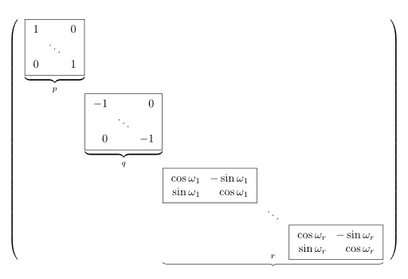

Die euklidische Normalform einer linearen Isometrie, manchmal auch lineare Normalform genannt, hat folgende Gestalt:
{kind=link}

Bei einer \(n \times n\)-Matrix gilt also folgende Gleichung: \(n = p + q + 2r\)
Bestimmung der Normalform
Sei \(\Phi\) eine lineare Isometrie eines euklidischen Vektorraumes. Dann habe \(\Phi\) die Abbildungsmatrix \(A\). Sei \(B := A + A^T\). Wenn man die euklidische Normalform bilden will, bestimmt man zuerst das charakteristische Polynom von \(B\). Die Nullstellen davon sind die Eigenwerte. Die algebraische Vielfachheit des Eigenwertes 2 von \(B\) (die Potenz im charakteristischen Polynom) gibt die Anzahl der 1er an, genauso gibt die Vielfachheit des Eigenwertes -2 die Anzahl der -1er an.
Die restlichen Eigenwerte \(\lambda_1, \dots, \lambda_r\) geben die Drehkästchen an.
Es gilt: \(\cos \omega = \frac{\lambda}{2}\) \(\sin \omega = \sqrt{1 - \frac{\lambda^2}{4}}\)
Mit diesen Angaben kann man direkt die euklidische Normalform angeben.
Bestimmung der Transformationsmatrix
Eigenräume bestimmen
Die Eigenräume berechnet man wie gewohnt:
\(\text{Eig}(\lambda_i) = \text{Kern}(B- \lambda_i \cdot E)\)
ONB bestimmen
Nun wählt man für jeden Eigenraum eine Basis Orthonormalbasis aus Eigenvektoren. Das kann man mit dem Gram-Schmidtsches Orthogonalisierungsverfahren machen, also: Wähle ein beliebiges \(w_1 \in \text{Eig}(\lambda_i)\).
Quellen
- Skript von Prof. Dr. Leuzinger, S. 228 ff.
- Klausur „Lineare Algebra und analytische Geometrie“ vom Frühjahr 2007, Aufgabe II.4